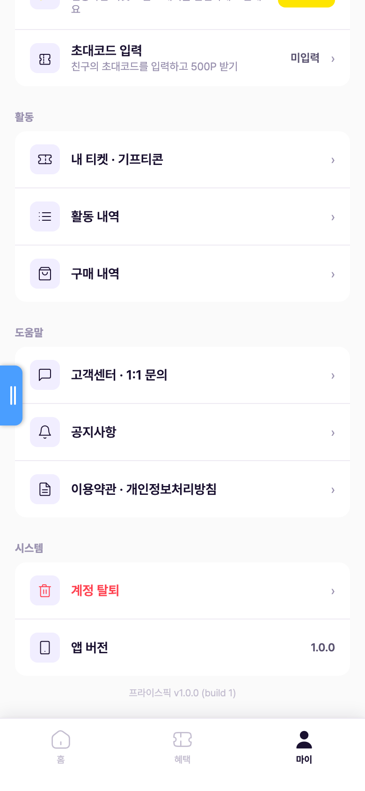
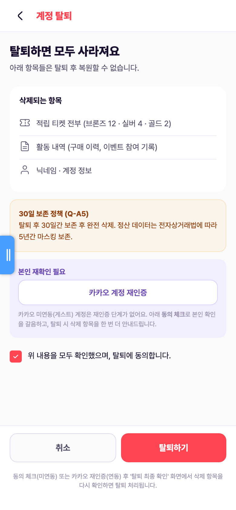
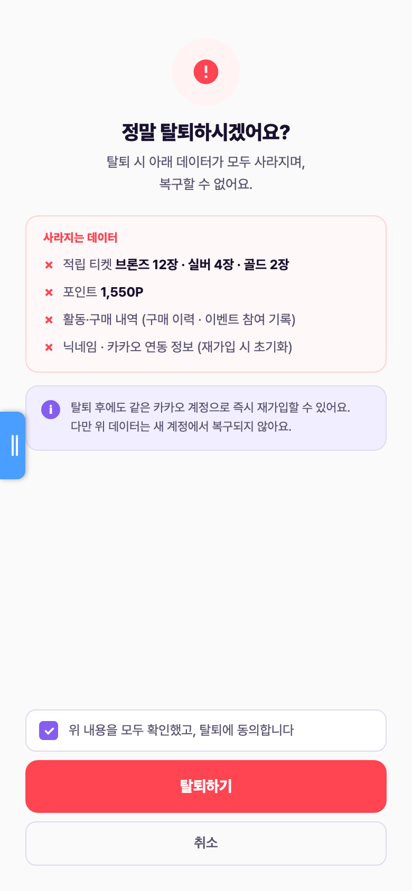
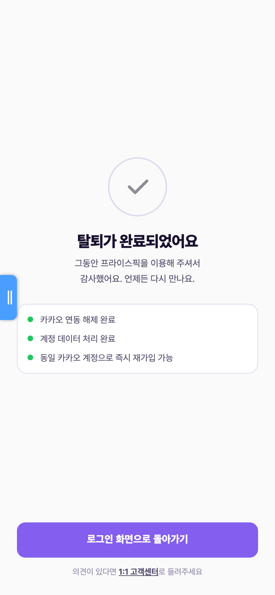
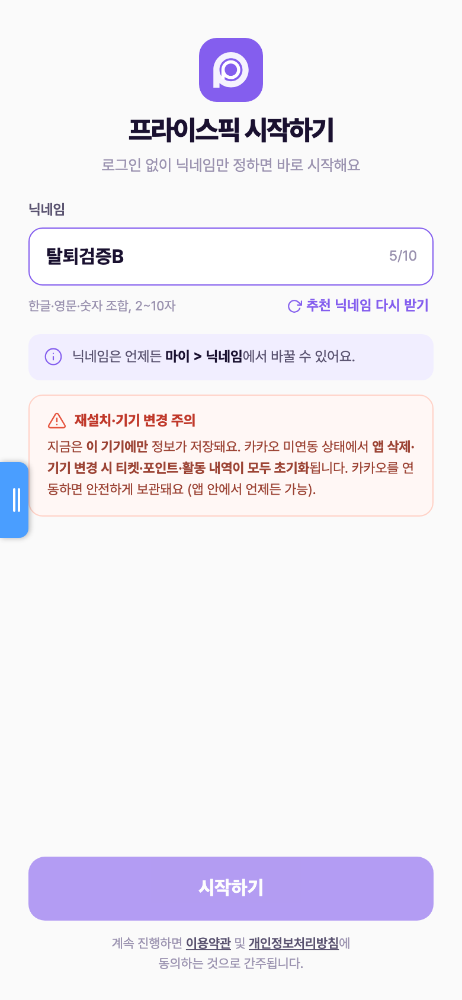
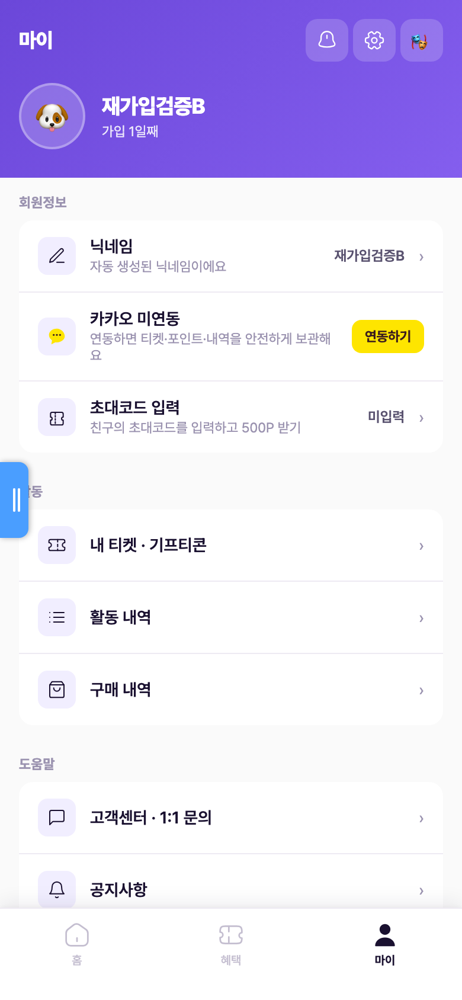
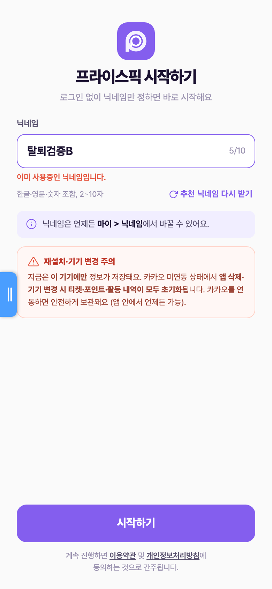
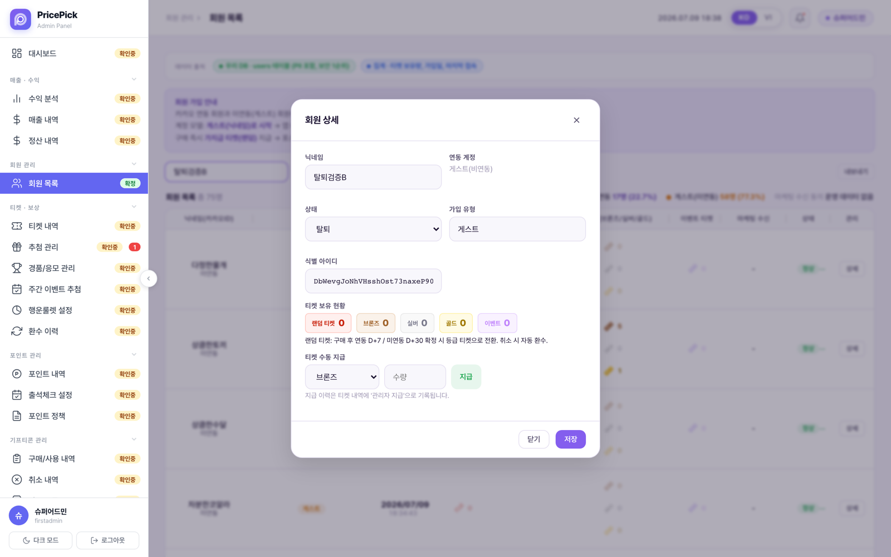
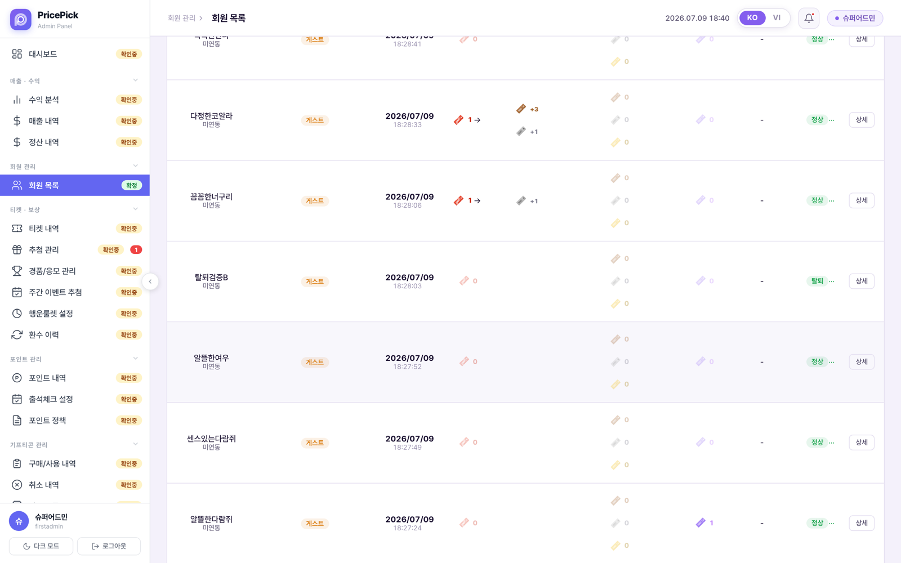
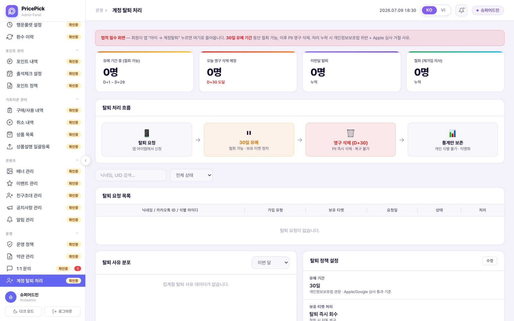

계정 탈퇴 · 재가입 프로세스 스토리보드
탈퇴 진입부터 완료·재가입, CMS 상태 관리까지 — 실제 배포본 화면 캡처 기반
마이 → 시스템 → "계정 탈퇴" 진입
탈퇴 진입점은 마이 탭 하단 시스템 섹션의 "계정 탈퇴" 한 곳이다. 위험 동작임을 나타내기 위해 붉은색으로 구분되어 있다.

계정 탈퇴 안내 — 삭제 항목 · 보존 정책 · 본인 확인
탈퇴로 잃게 되는 항목(티켓·활동 내역·계정 정보)을 먼저 보여주고, 30일 보존 정책(탈퇴 후 30일 보존 뒤 완전 삭제, 정산 데이터는 전자상거래법에 따라 5년 마스킹 보존)을 고지한다. 본인 확인은 카카오 연동 계정이면 카카오 재인증, 미연동(게스트)이면 동의 체크로 갈음한다.

탈퇴 최종 확인 — "정말 탈퇴하시겠어요?"
사라지는 데이터를 한 번 더 요약해 보여주고, "탈퇴 후에도 같은 카카오 계정으로 즉시 재가입할 수 있으나 데이터는 복구되지 않는다"는 핵심 정책을 안내한다. 동의 체크 후 탈퇴하기를 눌러야 확정된다. (2단계 확인 구조: 안내 → 최종 확인)

탈퇴 처리 · 완료 — 소프트 삭제 + 세션 초기화
설계상 탈퇴 확정 시 users.status='withdrawn' 마킹(소프트 삭제 — 하드 삭제는 30일 보존 정책에 따라 관리자만 가능)과 로그인 세션 초기화(익명 계정 삭제 → 재실행 시 새 세션 발급)가 실행된다. 완료 화면에서 "로그인 화면으로 돌아가기"를 누르면 닉네임 설정(가입 시작) 화면으로 이동해 곧바로 재가입할 수 있다.


재가입 — 즉시 가능, 새 계정으로 시작
재가입 쿨타임은 없다(1단계 확정). 재설치·재실행 후 닉네임만 정하면 새 계정으로 바로 시작하며, 이전 계정의 티켓·포인트·활동 내역은 복구되지 않는다. 단, 탈퇴한 계정의 닉네임은 여전히 점유된 상태라 같은 닉네임은 쓸 수 없다.
새 닉네임으로 즉시 재가입
닉네임 설정 → 시작하기만으로 재가입 완료. 홈은 0장 · 0P 초기 상태로 시작하고, 마이페이지도 새 계정 정보로 표시된다.


탈퇴한 계정의 닉네임 재사용 시도
탈퇴해도 계정 문서가 보존되는 동안 닉네임이 점유되어 "이미 사용중인 닉네임입니다"로 차단된다. 점유 해제 시점(D+30 삭제 연동 여부)은 정책 미결 — 미결 이슈 4.

회원 목록 · 상세에서 탈퇴 상태 관리 (실동작)
CMS 회원 상세에서 상태를 정상 / 정지 / 탈퇴로 변경할 수 있고, 저장하면 Firestore users.status에 실제 반영된다(운영자 수동 탈퇴 처리). 회원 목록에는 상태 배지(탈퇴)로 표시된다.


"계정 탈퇴 처리" 전용 화면 — 30일 유예 모델 (앱과 미연결)
CMS에는 별도의 "계정 탈퇴 처리" 메뉴가 있다: 탈퇴 요청 → 30일 유예(철회 가능·보유 티켓 정지) → 영구 삭제(D+30, PII 삭제) → 통계만 보존(익명화)의 4단계 흐름과 유예 중 인원·삭제 예정·철회 통계, 탈퇴 사유 분포, 탈퇴 정책 설정을 제공한다.

withdrawals 컬렉션(요청·유예·철회 모델)을 읽지만, 앱 탈퇴는 users.status(즉시 처리 모델)만 쓰도록 구현되어 있어 서로 연결되지 않는다 — 데이터가 항상 0건. 이는 "즉시 탈퇴 vs 30일 유예" 정책 미결(미결 이슈 2)이 구현 이원화로 드러난 것.
확정 정책 · 규칙
users.status='withdrawn' 마킹. 하드 삭제는 보안 규칙상 관리자만 가능(30일 보존 정책과 일치).
근거: app 소스 주석·firestore.rules (users delete: isAdmin만)미결 이슈 · 불일치 (형님 확인 필요)
버그 · 심각1. 배포본 앱 탈퇴가 실제로는 아무 처리도 하지 않음
탈퇴 완료 화면까지 정상 표시되지만 서버 처리(users.status='withdrawn' 마킹 + 세션 초기화)가 전혀 실행되지 않는다. 실측: 계정 3개(탈퇴검증A·B·C)로 탈퇴를 완주했으나 Firestore status 전부 active, withdrawn 0건, 재실행 시 기존 계정 그대로 복원.
원인(코드 확인): bindFlows()가 화면 전환 맵(FLOW_MAP)으로 최종 확인 화면의 모든 버튼을 먼저 바인딩(data-ip-bound=1 마킹, 화면 전환만)해서, 뒤에 실행되는 bindWithdrawConfirmScreen()이 이미 바인딩됐다고 건너뜀 → ppPerformWithdraw()가 영영 호출되지 않음. 2026-07-08 "계정 탈퇴 버그 수정"(a55842b)이 바인딩 순서 때문에 무력화된 상태.
정책 미결2. 탈퇴 모델 이원화 — "즉시 처리" vs "30일 유예·철회"
앱(및 마스터 정책서 확정 ③)은 즉시 탈퇴·복구 불가·즉시 재가입 모델. 반면 CMS "계정 탈퇴 처리" 화면과 마스터 정책서 계정 생애주기 조항("D+30 유예 — 요청 후 30일 안에 재로그인하면 복구 가능")은 30일 유예·철회 모델. 데이터 구조도 users.status vs withdrawals 컬렉션으로 갈라져 있다. 마스터 정책서 안에서도 두 조항이 공존(확정 ③ vs 생애주기 3-탈퇴의 유예 조항 + "재가입 쿨타임 미결" 표기). 어느 모델이 정본인지 대표 확정 필요 — 확정되면 앱·CMS·정책서·데이터 모델을 한쪽으로 정리해야 한다.
불일치3. 앱 내 이용약관에 "30일 재가입 제한" 문구 잔존
앱 이용약관 화면 제8조 ③에 "탈퇴 후 동일 계정 30일 이내 재가입 제한"이 남아 있다. 확정 정책(즉시 재가입·쿨타임 없음) 및 CMS 약관 관리의 수정본("탈퇴 후 동일 카카오 계정으로 즉시 재가입이 가능합니다")과 충돌 — 앱 약관 문구 교체 필요.
정책 미결4. 탈퇴 계정의 닉네임 점유 기간
탈퇴해도 계정 문서가 남는 동안 닉네임이 점유되어 재사용이 차단된다(실측: "이미 사용중인 닉네임입니다"). PII D+30 삭제 시점에 닉네임이 풀리는 구조라면 "탈퇴 후 30일간 닉네임 점유"가 되는데, 이 규칙이 정책서에 명문화되어 있지 않다. (현재는 이슈 1 버그로 탈퇴 자체가 안 되니 사실상 영구 점유.)
데모 한계5. 탈퇴 화면 수치 하드코딩 · CMS 검색/필터 미동작
탈퇴 안내·최종 확인 화면의 "삭제되는 항목" 수치(브론즈 12 · 실버 4 · 골드 2 · 1,550P)는 하드코딩으로 실계정 보유량과 무관하게 표시된다. CMS 회원 목록의 닉네임 검색과 상태 필터(정상/정지/탈퇴)는 UI만 있고 목록에 반영되지 않는다.
정합6. 스토리보드 인덱스 카드 문구 근거 없음
기능별 스토리보드 인덱스의 이 기능 카드에 "재가입 즉시 허용, 어뷰징 의심만 30일 제한"이라 적혀 있으나, "어뷰징 의심만 30일 제한"은 마스터 정책서 어디에도 없는 문구다. 인덱스 문구를 확정 정책에 맞게 수정 필요.